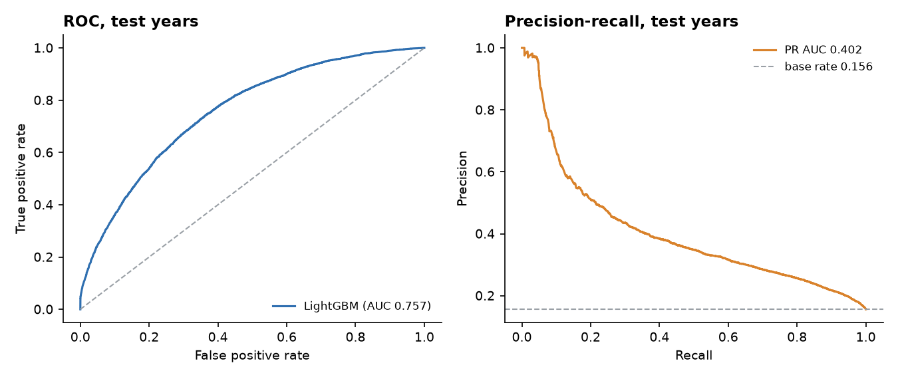
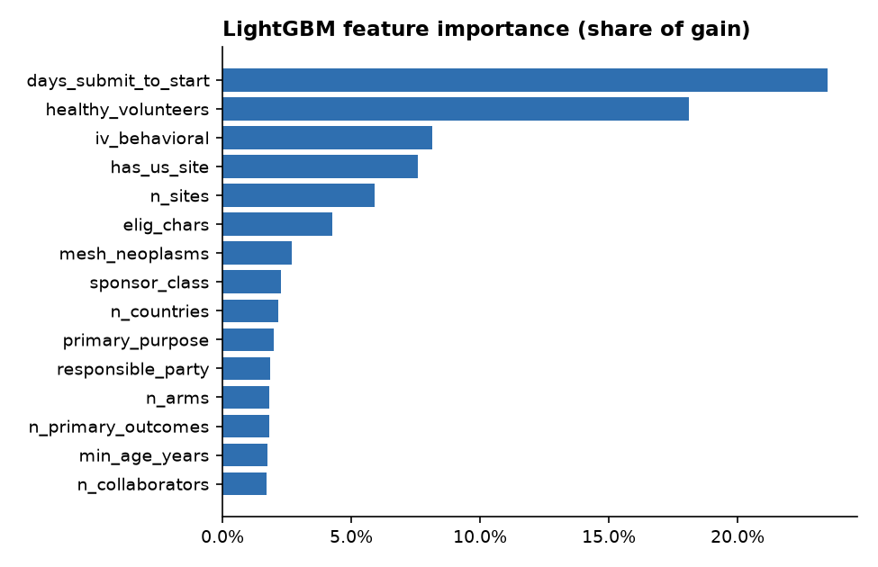
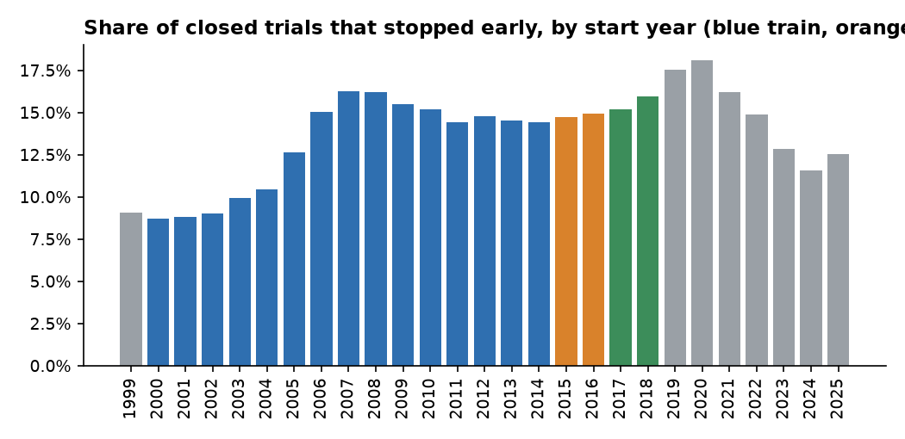
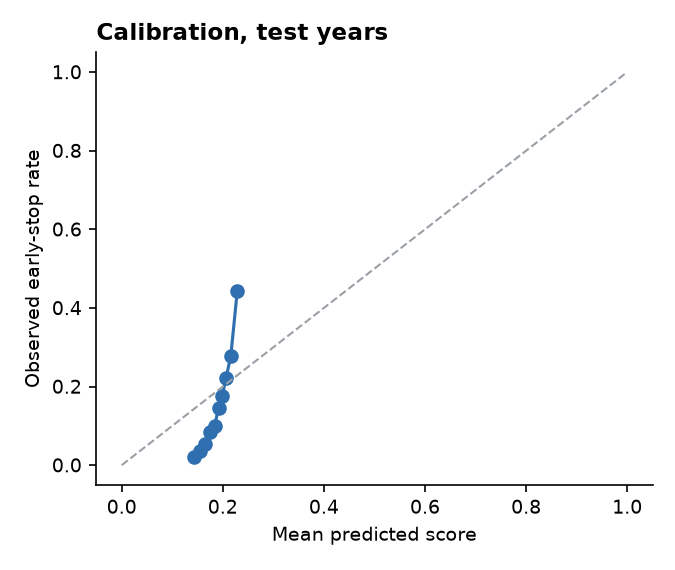

Which clinical trials stop early?
A model that flags interventional trials likely to end early (terminated, withdrawn or suspended) using only what is known when a trial is registered: phase, design, sponsor, sites, conditions and eligibility criteria. Built on every study record in ClinicalTrials.gov, with PySpark and Delta Lake feature steps, LightGBM, a start-year split so later trials never inform earlier ones, and MLflow tracking with a registered champion model.
Results on held-out start years
| Model | Valid AUC | Test AUC | Test PR AUC | Test balanced accuracy |
|---|




Leakage controls
- No enrollment count. ClinicalTrials.gov replaces the planned enrollment with the actual number once a trial closes, so for closed trials it encodes the outcome (withdrawn trials show 0).
- No dates or text written after the stop: completion dates, last update,
whyStoppedand results are never features. A test fails the build if any of them reaches the feature table. - Split by start year, not at random, so the model is always scored on trials that started after everything it learned from.
Data
| Step | Rows |
|---|
Limitations
- Site count and some design fields reflect the last registry update, not necessarily the record at registration; the registry's version history was not used.
- Trials started recently and already closed are skewed toward short or stopped studies, so 2019 onward is left out of evaluation.
- Labels treat withdrawn (never enrolled) and terminated trials the same; their causes differ.
- Runs locally on Spark 3.5 and Delta 3.2, not on a Databricks workspace.